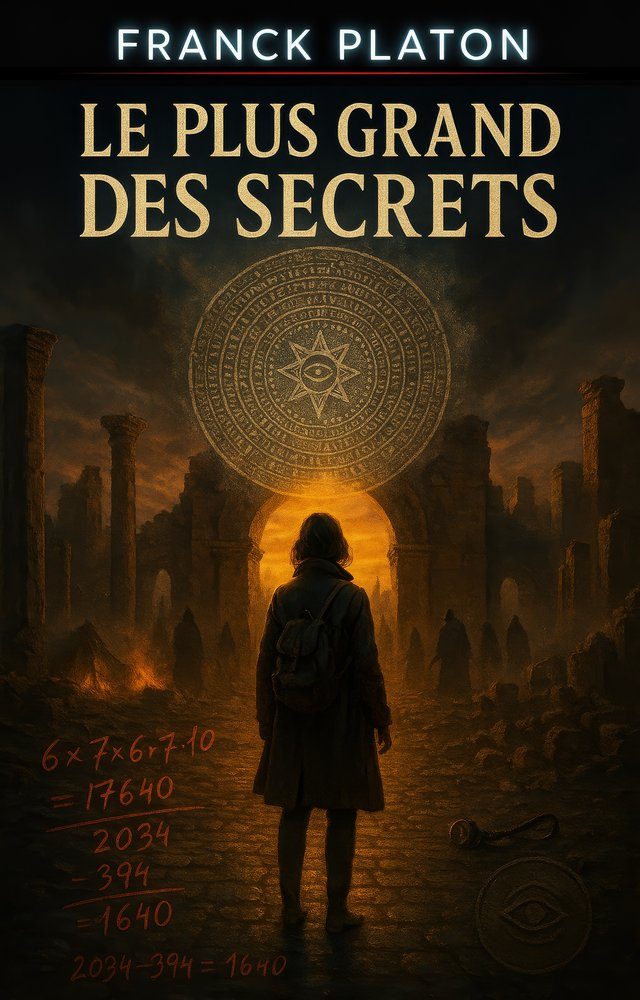
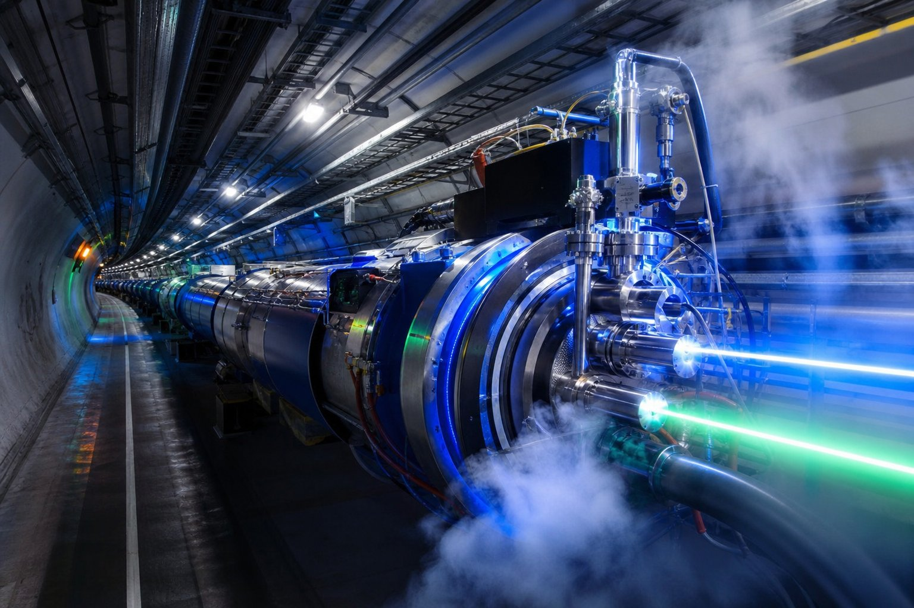
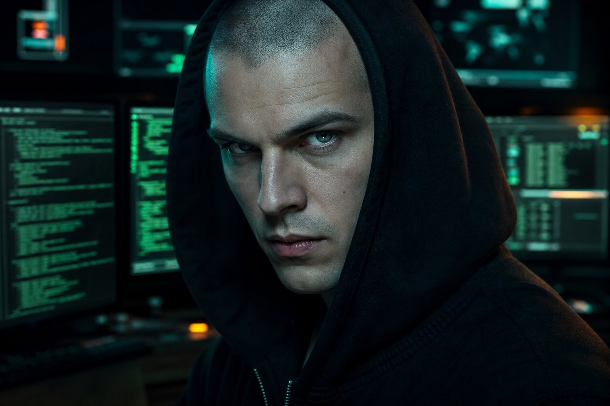
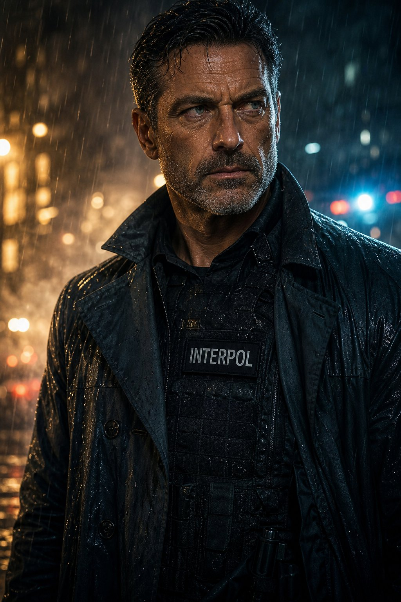
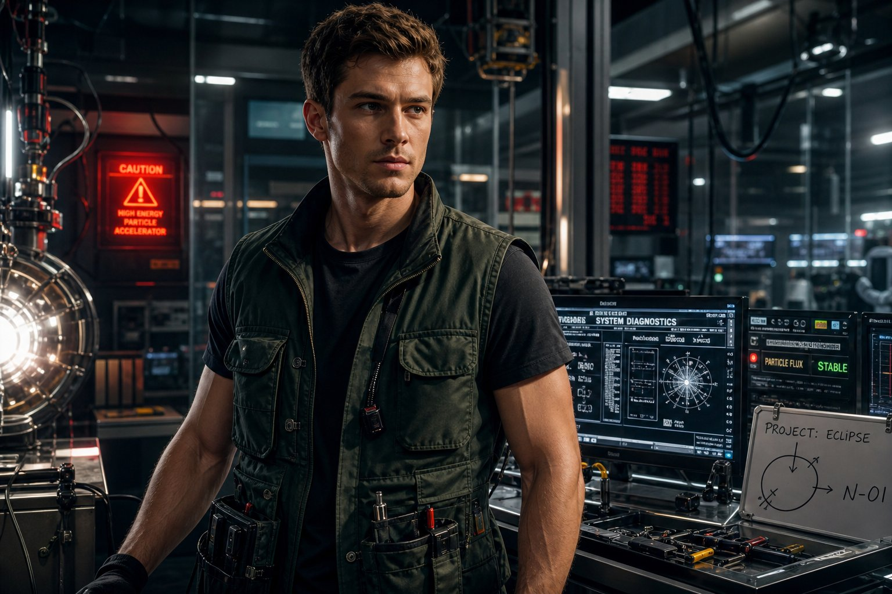
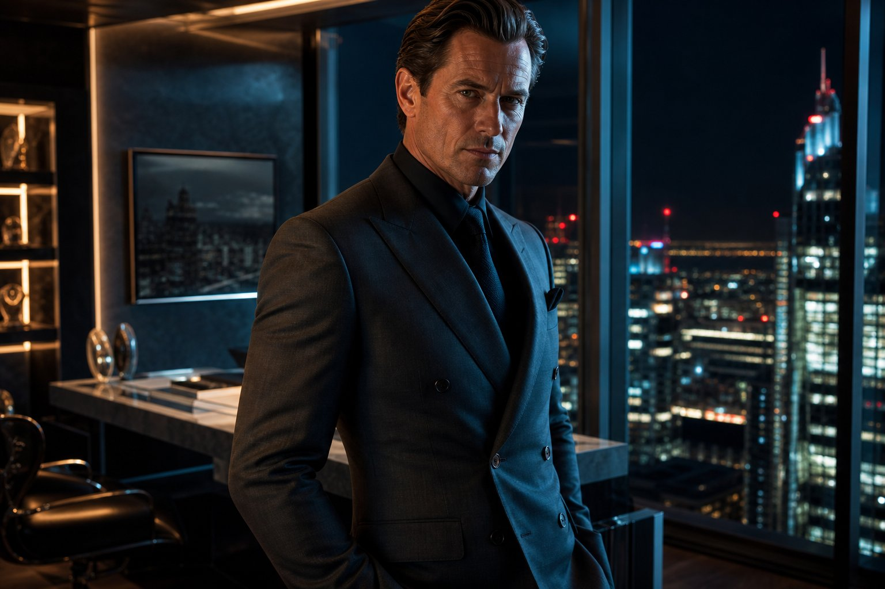
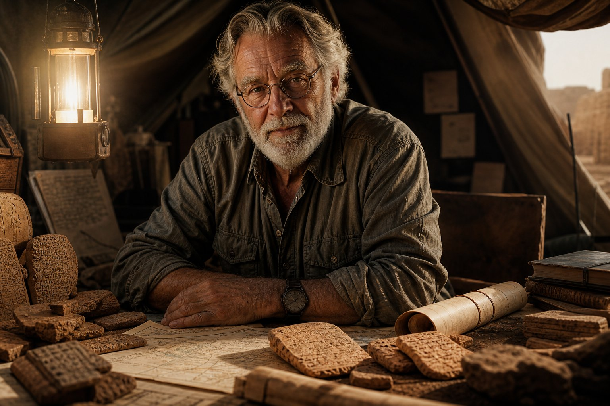
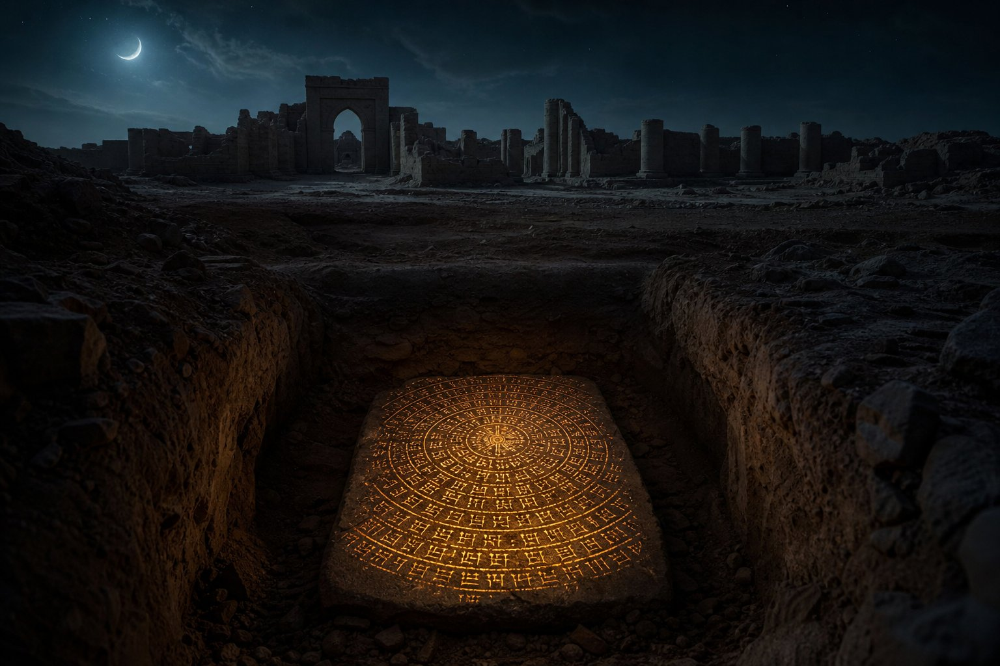

Un secret ésotérique enfoui sous les sables de Babylone depuis quatre millénaires. Une suite de catastrophes technologiques et biologiques modernes qui s’enclenche sous l’impulsion d’une oligarchie secrète. Un compte à rebours mondial qui ne s'arrêtera qu'avec la révélation de l'ultime fréquence.

Le professeur Elijah Shepherd exhume à Babylone une mystérieuse tablette d'argile marquée de cercles concentriques. Quelques heures plus tard, il est retrouvé mort. Reçu en héritage par sa fille, Rébecca, cryptologue de génie à Vatican et Princeton, cet artéfact se révèle porter un code mathématique décrivant une succession millimétrée de plaies planétaires. Traquée par les Veilleurs de Sion, Rébecca doit faire alliance avec Keller, un pirate informatique insaisissable. Du Vatican aux steppes de Baïkonour, ils se lancent dans une course contre la montre haletante pour empêcher la destruction de l'ordre mondial et révéler l'insondable vérité.
La tablette d'argile exhumée en Irak cache un code quantique millénaire. Cliquez sur les glyphes de la tablette pour pirater les bases de données des Veilleurs de Sion et déchiffrer les trois sceaux du secret.
La fréquence de 7,83 Hz (La Résonance de Schumann), injectée dans le réseau satellitaire Genesis-12, a annulé les ondes destructrices et a converti le laser orbital en une nova de lumière visible sur toute la Terre. Le réseau d'asservissement des Veilleurs de Sion s'est effondré. La vérité est enfin libre.
Plongez dans les scènes grandioses et haletantes du combat des Gardiens contre Nathanaël Burke à travers notre bande-annonce cinématique photoréaliste.
De l'accélérateur du CERN aux volcans italiens. Découvrez l'intégralité des affrontements secrets menés par les Gardiens pour contrecarrer les desseins criminels de Nathanaël Burke et des Veilleurs de Sion.

Les Gardiens s'infiltrent dans les tunnels du Super Synchrotron à Protons (SPS). Keller intercepte un cheval de Troie conçu par Burke pour simuler une surchauffe, purger l'hélium et provoquer l'effondrement du confinement magnétique du collisionneur de hadrons. Bien que piégés, they fuient par un conduit d'évacuation cryogénique en provoquant une micro-résonance magnétique.
Le destin de la Terre repose sur l'affrontement entre deux alliances exceptionnelles et des esprits hors du commun. Découvrez les dossiers des acteurs clés de cette guerre silencieuse.
Enseignante-chercheuse en mathématiques appliquées à Princeton, elle hérite du fardeau de son père : décoder la tablette de Babylone tout en échappant à des tueurs d'élite. Son génie d'analyse est le seul bouclier de l'humanité.

Hacker légendaire vivant dans la clandestinité. Solitaire et cynique, il active pour Rébecca le "Protocole Prométhée". Sa maîtrise de l'informatique quantique permettra de pirater le réseau satellite Genesis-12.

Agent spécial d'Interpol et protecteur tactique des Gardiens. Son calme sous le feu et son expertise physique assurent la survie de Rébecca. Il se sacrifiera héroïquement sous les glaces de Svalbard.
Érudite d'archéologie biblique au Vatican. Son déchiffrement des écritures sémitiques et des résonances minérales s'avère indispensable pour déceler les résonateurs de Burke au Chili.

Physicien de terrain de la confrérie. Depuis la crypte de Prague, il élabore les shunts électriques et thermiques capables de contrecarrer les catastrophes environnementales de Burke.
Théologienne et coordonnatrice logistique des Gardiens. D'un calme impérial, elle dirige les liaisons radio clandestines et fait le pont entre les textes anciens et les alertes satellites de Prague.

Milliardaire britannique et héritier de Burke & Co. Il dirige secrètement la branche armée des Veilleurs. Son obsession : s'emparer des cycles terrestres pour rebâtir une société sous contrôle impérial.

Archéologue de renom qui consacre sa vie aux cavités d'Irak. Sa découverte fortuite sous Babylone déclenche tout. Assassiné, il parvient à envoyer les clichés cryptés à sa fille Rébecca.
Nés en 1198 sous le « Pacte d’Ain Karim » unissant clercs du Vatican, rabbins kabbalistes et mystiques soufis. Leur vocation : protéger le secret de la chronologie divine contre les usurpateurs et veiller à ce que l'humanité ne soit pas privée de sa liberté lorsque s'achèvera le cycle.
Une oligarchie financière occulte dirigée par Nathanaël Burke. Ils cherchent à accaparer la connaissance des cycles terrestres pour provoquer artificiellement l'effondrement des nations et réformer la société sous la coupe d'un contrôle impérial absolu et d'un techno-militarisme orbital.
De l'exhumation de la tablette à Babylone jusqu'à l'aube glorieuse de Jérusalem. Explorez les lieux clés de l'intrigue en cliquant sur les marqueurs de la carte.

4h14 du matin. Sous la lune pâle du désert d'Irak, le Pr. Elijah Shepherd exhume la tablette dans une cavité dissimulée depuis 4000 ans, gravée de symboles cunéiformes concentriques. Sa découverte déclenche un engrenage fatal.
De l'exhumation sacrilège de Babylone aux abysses de l'Atlantique. Parcourez la base de données classifiée des Gardiens détaillant toutes les villes et lieux stratégiques de l'intrigue du roman.
Le point de départ de toute l'intrigue. C'est sous les ruines d'argile de la cité antique de Babylone que sommeille le secret du compte à rebours de l'humanité.
C'est le point de départ de l'intrigue (Prologue). Le professeur Elijah Shepherd (le père de Rébecca) y découvre la fameuse tablette de Nabonide, une clé de déchiffrement millénaire, avant d'être traqué et assassiné dans son campement par les Veilleurs de Sion.
Explorez l'inventaire classifié des artéfacts, manuscrits sacrés et technologies secrètes qui déterminent le dénouement de la guerre de l'ombre.
Plongez dans les secrets de fabrication du roman. Découvrez l'univers graphique des factions majeures, les décryptages de mystères antiques et les scènes d'anthologie.
Plongez au cœur d'un chef-d'œuvre de tension et de réflexion. Commandez dès maintenant le roman phénomène de Franck Platon.
Une course contre la montre ésotérique et géopolitique où se mêlent cyber-guerre, mathématiques anciennes, satellites orbitaux et fraternités millénaires. Plongez dans l'un des thrillers les plus ambitieux de sa génération.
Un rythme d'action haletant de la première à la dernière page, d'une grande rigueur scientifique, s'inspirant des travaux de cryptographie moderne et de géopolitique spatiale réelle.
Un pont fascinant jeté entre l'ancienne Babylone d'Hammurabi, les manuscrits du Moyen Âge, les secrets du Vatican et les technologies de pointe de l'informatique quantique.
Une réflexion troublante sur la dépendance technologique de notre civilisation (blackouts, nanotechnologies, ruine agricole et syndrome de Kessler) face aux menaces futures.
Lisez dès ce soir l'un des romans les plus captivants de l'année. Livraison en 1 jour gratuit avec Amazon Prime.
Commander sur Amazon.fr« Un thriller ésotérique époustouflant qui n'a rien à envier au Da Vinci Code ni aux grands romans d'anticipation. Les explications scientifiques sur la géophysique et les ondes sont fascinantes de crédibilité ! »
« Platon a écrit un techno-thriller d'une efficacité rare. On vibre avec Rébecca et Keller de bout en bout. La chronologie des plaies fait écho à nos angoisses technologiques réelles avec brio. À lire absolument ! »
« La fin est d'une beauté à couper le souffle. Ce concept de la Pierre Angulaire et de la conversion en lumière m'a profondément marqué. Un roman intelligent, addictif et porteur d'espoir. »